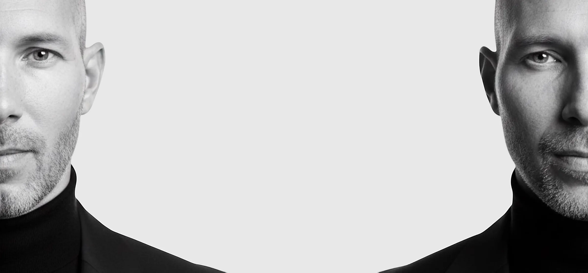

Wien · Budapest · Mitteleuropa
Jedes bedeutende Porträt beginnt mit Aufmerksamkeit.
Ich beginne nicht mit der Kamera. Ich beginne mit Aufmerksamkeit. Bevor das erste Bild entsteht, möchte ich den Menschen verstehen, die Rolle, die er trägt, und den Ort, an dem das Bild später wirken soll.
Zwischen Wien und Budapest arbeite ich mit Führungskräften, Gründer:innen, Künstler:innen und Marken. Ich möchte keine Sicherheit inszenieren, sondern einen ruhigen Raum schaffen, in dem jemand ohne Rolle präsent sein kann.
Für mich zeigt ein Porträt nicht nur, wie jemand aussieht. Es zeigt Präsenz, Würde und die Art, wie Menschen sich an uns erinnern, noch bevor das erste Gespräch beginnt.
Was ich in einem Porträt suche
Nicht das perfekte Lächeln. Nicht die perfekte Haltung. Nicht eine makellose Oberfläche. Ich suche den Moment, in dem jemand nicht mehr versucht zu wirken, sondern einfach präsent ist.
Dort beginnt Vertrauen. Und oft entsteht genau dort das stärkste Bild.
Ein Porträt ist nie nur ein Bild. Im beruflichen Kontext prägt es mit, wie ein Mensch verstanden wird, bevor das erste Treffen, das erste Angebot oder der erste öffentliche Auftritt beginnt.
Die Arbeit beginnt mit Aufmerksamkeit: Rolle, Publikum, Markt, Verwendung und die Präsenz, die das Bild tragen muss.
Das Ergebnis soll ruhig, präzise und menschlich wirken — nicht gestellt, nicht laut, nicht beliebig.
Vier Arbeitsfelder, dieselbe Aufmerksamkeit
Führungskräfteporträts
Für Menschen, deren Porträt Vertrauen tragen muss, bevor sie den Raum betreten.
Mehr ›Markenfotografie & visuelle Positionierung
Eine visuelle Sprache für Menschen, Unternehmen und Ideen, die klar verstanden werden sollen.
Mehr ›Unternehmens-Veranstaltungsfotografie
Ruhige Dokumentation der Momente, die nach einem wichtigen Ereignis bleiben.
Mehr ›Künstlerische Fotografie
Persönliche und künstlerische Projekte, in denen Würde, Vertrauen und Geschichte wichtiger sind als Wirkung.
Mehr ›Was ich in fünfundzwanzig Jahren gelernt habe
Dies ist meine deutschsprachige Unternehmensseite. Wien ist meine primäre Arbeitsbasis, Budapest die zweite.
Auf banhalmi.art bewahre ich das längere künstlerische Werk: Bücher, Ausstellungen, Essays, Euphoria und fotografische Projekte, die auch meine heutige Arbeit mit Führungskräften prägen.
Die geschäftliche und die künstlerische Arbeit haben unterschiedliche Aufgaben, aber ich beginne beide am selben Punkt: Präsenz verstehen, bevor ich fotografiere.
Seit mehr als fünfundzwanzig Jahren arbeite ich mit Menschen vor der Kamera. Diese Seite zeigt die professionelle Seite dieses Weges: Führungskräfteporträts, visuelle Positionierung, Events, Bücher, Ausstellungen und die ruhige Aufmerksamkeit, die alles verbindet.
Hier konzentriere ich mich auf die professionelle Service-Ebene meiner Arbeit: Porträts, Markenbilder und Eventfotografie für Menschen und Organisationen, die Bilder mit Verantwortung brauchen.
Wenn Sie den gesamten künstlerischen Bogen sehen möchten — Bücher, Ausstellungen, Medien und langfristige Projekte — bewahre ich ihn auf banhalmi.art.
Ein Fotograf. Ein sorgfältig gewähltes Netzwerk.
Manche Projekte brauchen meine persönliche Anwesenheit vom ersten Gespräch bis zur Bildauswahl. Andere brauchen ein sorgfältig zusammengestelltes Team. Entscheidend ist nicht die Größe des Projekts, sondern was der Aufgabe wirklich dient.
Über die Jahre ist zwischen Wien, Budapest und internationalen Orten ein Netzwerk entstanden, das größeren Projekten Kapazität gibt, ohne den persönlichen Rhythmus zu verlieren.
Nachdem ich den Auftrag verstanden habe, definiere ich die passende Koordination: ich persönlich, ein ausgewähltes Mitglied des BANHALMI Teams oder — bei ausgewählten AmCham-bezogenen Projekten — Speier Viko.
Wenn ein Projekt mehr als ein Augenpaar braucht, skaliere ich nicht über Menge, sondern über Vertrauen. Rund um BANHALMI gibt es ein koordiniertes professionelles Netzwerk, das ich einbinde, wenn es dem Ziel des Kunden wirklich dient.
Speier Viko kann ausgewählte AmCham-bezogene Projekte je nach Projektanforderung koordinieren. Diese Rolle trägt dazu bei, dass die Marke BANHALMI auch im internationalen Geschäftsumfeld ruhig, präzise und zuverlässig arbeiten kann.
Ich bin OM SYSTEM Botschafter und arbeite mit OM SYSTEM Botschaftern sowie mit dem professionellen Fotografenteam von VIPACH – Vienna Photo Art & Creative Hub zusammen. Es handelt sich nicht um eine lose Kontaktliste, sondern um ein vertrauensbasiertes kreatives Netzwerk, das ich bei Bedarf mit mehreren Fotografen, mobilem Studio, parallelen Standorten und schnellerer Postproduktion skalieren kann.
Für Kundinnen und Kunden in Wien und Budapest bedeutet das, dass unterschiedliche fotografische Aufgaben mit derselben visuellen Haltung umgesetzt werden können.
Nahezu 50 Fachleute
Ein vertrautes Netzwerk für Projekte, die mehr Kapazität, schnellere Retusche oder parallele Orte brauchen.
Speier Viko
Kann ausgewählte AmCham-bezogene internationale Business-Projekte je nach Projektanforderung koordinieren.
OM SYSTEM Botschafter-Netzwerk
Ich bin OM SYSTEM Botschafter und arbeite bei ausgewählten Projekten mit OM SYSTEM Botschaftern zusammen.
VIPACH Profi-Team
Wenn es sinnvoll ist, arbeite ich auch mit dem professionellen Fotografenteam von VIPACH – Vienna Photo Art & Creative Hub zusammen.
Kundenstimmen öffnen
Kundenstimmen
Ausgewählte Google-Bewertungen stehen in einem ruhigen, aufklappbaren Bereich zur Verfügung. Sie sind für Besucher gedacht, die vor dem ersten Gespräch zusätzliche Orientierung suchen.